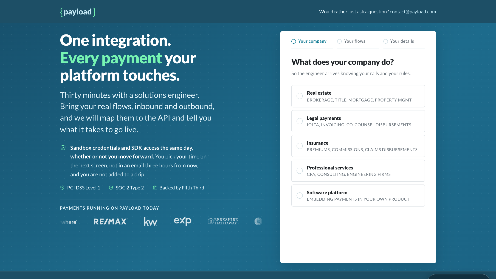
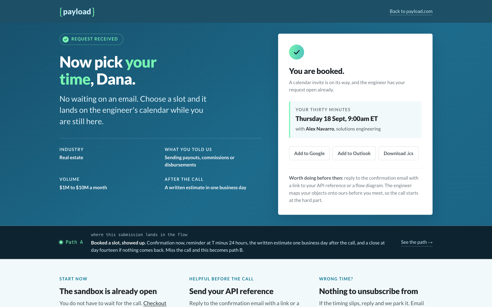
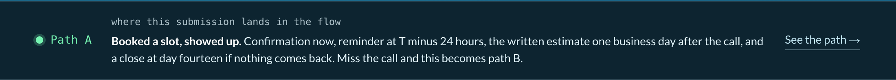
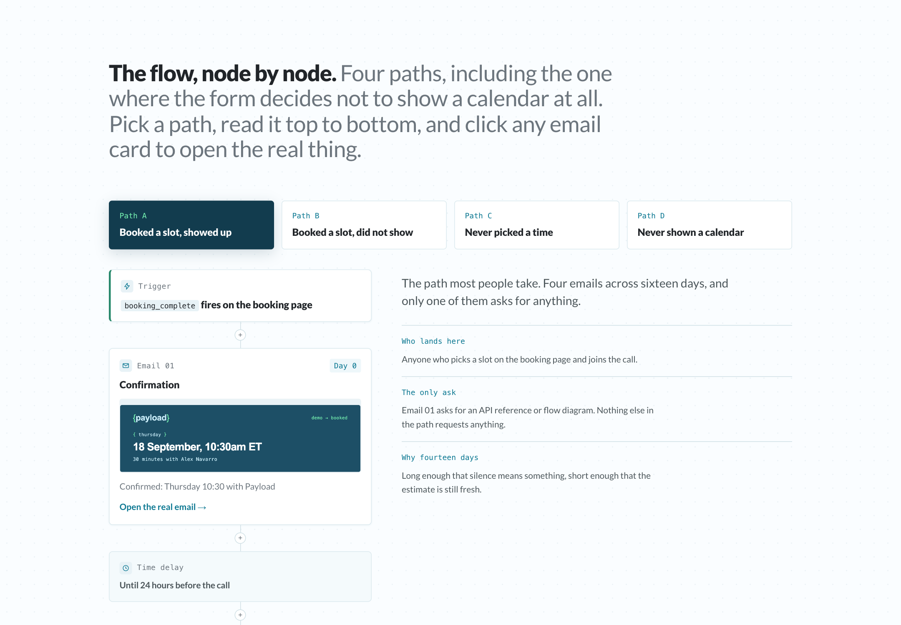

Their highest value page did not exist, so I built it.
Payload is a Cincinnati embedded payments company that moves about $500M a month. In August 2026 they took their first outside capital, from Fifth Third, and started pushing out of real estate into legal, insurance and professional services.
That expansion runs on demand generation. Demand generation runs on knowing which page produced the meeting. I spent a week finding out whether their site could answer that question, then built the part that was missing: a demo page with a real address, the booking screen behind it, and the seven emails that follow.
A teardown of thirty pages turned up thirty one items. This case study only covers the one that mattered, because it is the one everything else hangs off.
Every conversion action on payload.com is a modal with no URL. I clicked all five in a real browser and watched the address bar.
SIGN IN → url=https://payload.com/ opens "Please sign in"
START BUILDING → url=https://payload.com/ opens "Enter your information"
TALK TO OUR TEAM → url=https://payload.com/ opens "Contact Us"
GET STARTED → url=https://payload.com/ opens "Contact Us"
CONTACT US → url=https://payload.com/ opens "Contact Us"
All five are <button> elements that open an overlay. /demo, /contact and /pricing all return 404.
That one decision cascades. No landing page to point an ad at. No thank you URL to fire a conversion on. No link a salesperson can paste into an email. No step in analytics between "visited" and "became a lead."
It is also not a design problem, which is what makes it worth raising. Nobody chose it. It is a page that does not exist yet.
02
So the first thing it needed was an address
The form asks two questions before it asks for anything typed. Both are one click, and both come straight off Payload's own solutions nav, so the answers map onto pages and content that already exist.

The first screen. Card, credentials and the customer marquee all clear the fold at 869px, which is the viewport I built against rather than a round number.
03
Four decisions worth arguing about
01
Booking happens on the page, not in an email
Every email you make somebody open is a place to lose them, and intent peaks in the seconds after they submit. The calendar sits on the thank you page, so it acts on that peak instead of posting a letter to it. Email becomes the safety net underneath, which is a job it is good at.
02
Not every submission earns a calendar slot
Finix, Moov and CargoWise all collect details and promise a reply rather than exposing a calendar, and their reasons are sound. So this gates instead of choosing. Pre-launch and still deciding gets a written answer and sandbox credentials, and the page says why out loud. The button relabels itself so it never promises a calendar it is about to withhold.
03
The qualifier costs one click and comes first
Typing is the expensive part of a form, so the first screen asks for none. It also means an abandon on screen four still reports who they were, because the industry fired before a character was typed.
04
The calendar refuses dates too far out
The longer the gap between booking and the call, the more chances there are to forget it or double book it. The picker caps at five business days and shows the soonest first. Saying that on the page turns a constraint into a reason to trust the person on the other end.

The booking screen after a slot is picked.

The band underneath it reads the same signals the flow does, and rewrites itself the moment a slot is confirmed. Pre-launch answers never see a calendar, so they land on D before the page finishes loading. It exists because a flow diagram is easy to nod at and hard to believe. This puts the branch on screen at the moment a real person would enter it, and links straight to that path in the builder.
04
Then the half that most demo pages forget
A page that converts and hands the lead to nobody has generated a to do item. Seven emails, four paths, and every path terminates. None of them loops.
Path
What sends
How it ends
ABooked, showed up
Confirmation now, reminder at T-24h, the written estimate one business day after the call, a close at day fourteen.
closed_lostafter fourteen silent days
BBooked, no show
Same first two, then a recovery email inside the hour. Same day rebooking is the only kind that converts.
no_show_lapsedno estimate ever sends
CNever picked a time
One nudge at +24h, which says out loud that it is the only one.
no_bookingto a quarterly human list
DNever shown a calendar
One email inside a business day, naming the two decisions that come before a demo is useful.
too_earlyany reply re enters at booking
The cadence also compresses. A sequence built for a meeting nine days out is wrong for a meeting tomorrow, so under 24 hours the confirmation is the reminder and nothing else sends.

Built the way it would be built. A pill is a wait, a card is an email you can open, and the last node says what the record becomes.
Two of the seven branch by industry. Not just their reading, but the question they lead with. A title company gets asked which side of the close it starts on. A legal practice gets asked whether trust funds ever touch its balance. A platform gets asked who holds the funds.
The other five are identical across every industry, so the generator writes no variants for them. Eight variant files rather than thirty five. Personalising everything is how a sequence stops sounding like a person.
Open email 01 ↗01, the confirmation. Seven blocks. The meeting details live inside the header so the email opens with one object that answers every logistics question.
Open email 07 ↗07, the one the gate sends. The hardest to write: the form just declined to show someone a calendar, so this has to be worth more than the meeting it withheld.
All seven are table based HTML with plain text alternates, written as code rather than assembled in a drag and drop editor, and generated from one shared shell rather than seven copy pasted files. They hold up with images blocked, which is the real first impression for a chunk of any B2B list.
05
What it would let them report
Which campaign produced a meeting
Not which campaign produced a session. Step one fires form_step_complete with the industry before anyone types, booking_complete carries the meeting. Join those two and paid search has a numerator it did not have.
A no show rate at all
Bookings minus completed calls. On the current site neither end of that subtraction is recorded, so the number does not exist and nobody can be asked to improve it.
Whether the page is telling the truth
The page promises a written estimate in one business day. estimate_delivered minus call_completed answers that per engineer, every week. A promise nobody measures is one that quietly stops being kept.
A closed lost reason that fills itself in
The last email offers three answers and names the third, no, out loud. Most pipelines are full of deals nobody wants to mark dead. Asking plainly is cheaper than guessing.